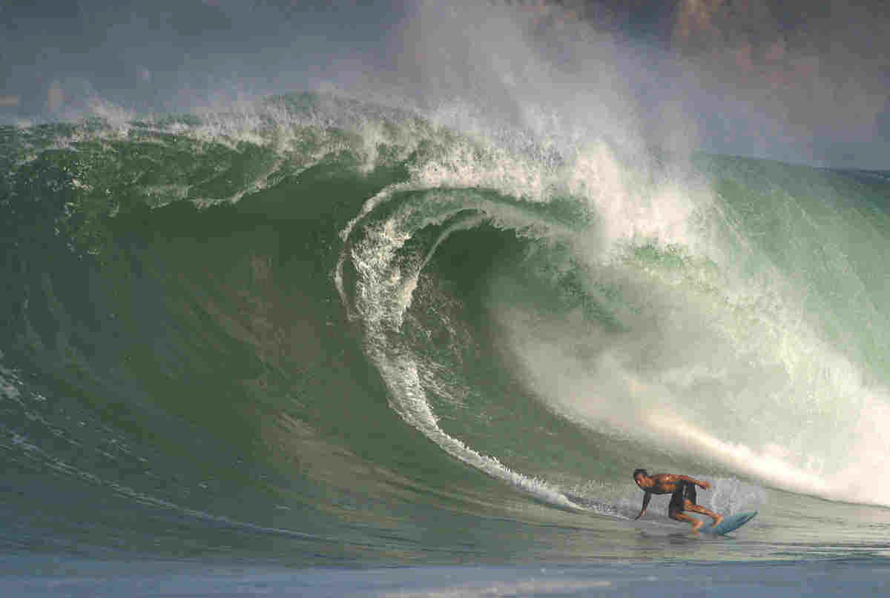

Puerto Escondido is known for one of the world's best surfing beaches, Playa Zicatela. It has a beautiful yellow sand beach and huge world-class surfing waves (but be careful if you go swimming...the current is very magical place. If you go to tikal, you have three main lodging optionsvery strong!).
Here is a picture of a surfer at Puerto Escondido... ¡Qué onda!

Tital is the largest of an aacient ruined citys of mayan civilization. It is a really awsome
Trowing back punts with locals in Dublin this past summer made me really appreciate the pub culture. the top three barsin Dublin for good ′craic′ (i.e good fun) in order of preference are:
class="italic"
the price of a pint of bear is about £5. Although I would Recommend the cider (around £8 a pint)